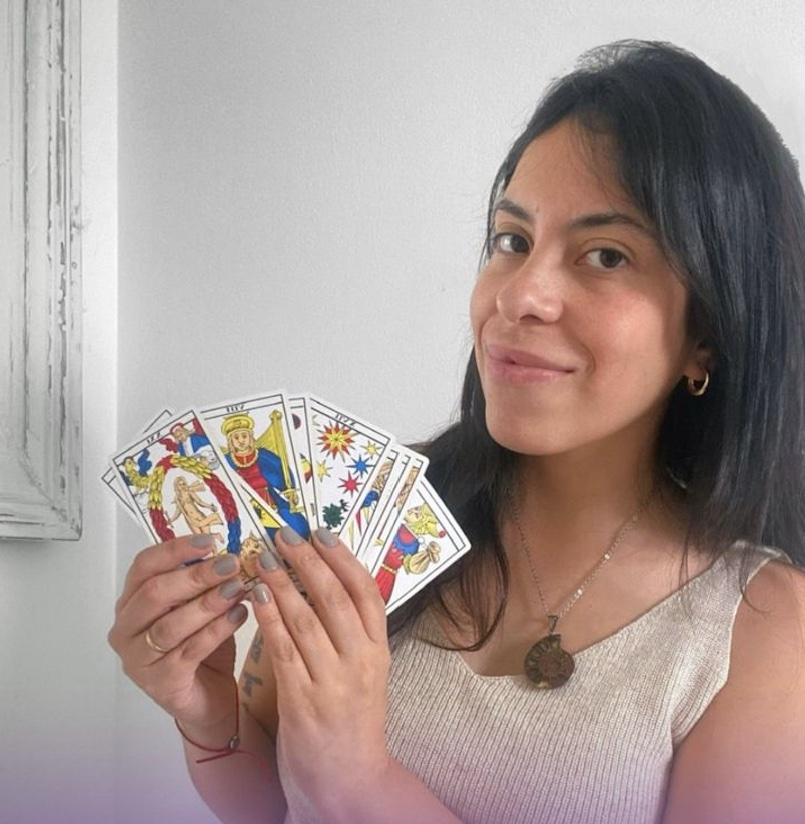

A traves de Mi
Psicofisica · Astrologia · Tarot
Herramientas de autoconocimiento guiadas por una profesional matriculada. No predigo tu futuro. Te ayudo a entender tu presente.
Proxima luna llena en Libra
2 de Abril, 2026
Un momento ideal para soltar lo que ya no te sirve y buscar equilibrio interior.
Servicios
Equilibra tu campo energetico
Un espejo, no una prediccion
Tu mapa en las estrellas
La memoria de tu alma
5 senales de que tu cuerpo te esta pidiendo una reconexion energetica
Guia gratuita por WhatsApp
Quiero mi guia gratisExperiencias
"Entre con una tension de semanas y sali sintiendome otra persona. En 20 minutos."
Lucia, 35 — Psicofisica
"Las cartas me mostraron lo que yo no podia ver sola. Claridad total."
Camila, 28 — Tarot
"Muchas piezas de mi vida encajaron por primera vez."
Valentina, 34 — Registros
Charlar no tiene costo.
Escribime por WhatsAppQuien soy
Mayra
Profesional matriculada en Psicofisica
Desde chica descubri que podia percibir lo que muchos no veian. Lo que al principio me trajo dudas, con el tiempo se transformo en mi mayor fortaleza.
Me forme en distintas terapias para canalizar esa sensibilidad. Hoy mi mision es acompanarte en tu camino de sanacion y claridad.
Liberar bloqueos. Equilibrar tu energia. Reconectar con tu esencia. Para que vivas una vida mas liviana, en paz y en armonia.
"Uniendo lo invisible con lo visible"

Sumate a la comunidad
Recibi contenido exclusivo, avisos de talleres y herramientas gratuitas.
Unirme a la listaServicios
Profesional matriculada en Psicofisica. Cada servicio es un camino distinto hacia el mismo lugar: vos.
Cursos y talleres
Espacios grupales para profundizar. Cupos limitados para mantener la intimidad.
Blog